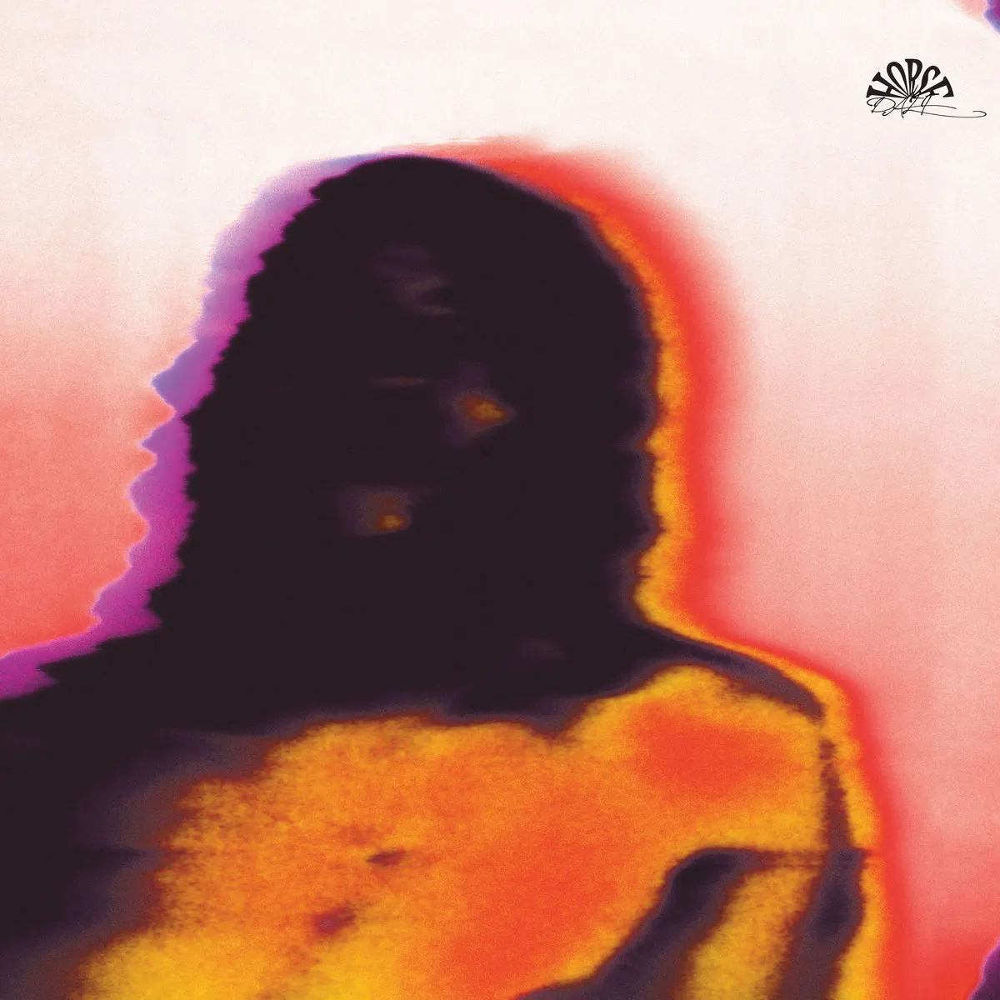

Publié le 23 novembre 2026

Dalí a publié son premier album studio nommé Horse le 20 novembre 2026. Ce disque de 12 titres et 33 minutes concrétise plus de deux ans de travail en studio.
L'artiste y aborde la solitude, ses doutes personnels et sa relation au succès. Cette sortie devance son concert au Zénith de Paris prévu le 11 décembre 2026.
Que trouve-t-on dans l'album Horse de Dalí ?
L'album Horse rassemble 12 morceaux originaux sur une durée totale de 33 minutes, d'après la fiche Apple Music du projet. Dalí choisit de porter l'ensemble du disque sans aucun invité au micro. Le titre « Parlerfort », dévoilé plus tôt cette année, figurait déjà parmi ses extraits les plus écoutés.
Les morceaux oscillent entre rap mélodique, R&B sombre et sonorités alternatives proches du post-rock. Dalí conserve son chant posé et son écriture intime sur des instrumentales épurées. Les refrains mélancoliques croisent des rythmiques synthétiques plus lourdes.
Des titres comme « Cobein », « Le monde » ou « 777 » illustrent la variété sonore du projet. Le morceau « Freee » apporte des guitares plus amples, tandis que « J'allume » privilégie une basse lourde. L'écriture conserve le ton direct de ses premiers EPs.
Comment Kura et Dalí ont-ils construit le son de Horse ?
Pour ce premier album, Dalí s'est entouré de son compositeur habituel Kura, présent depuis ses débuts. Le rappeur s'est confié dans l'émission À la régulière sur France Inter. Il y détaille un travail de création mené après plus d'un an de tournée.
D'autres producteurs comme lilchick, samoss, BLOU FEET ou MEI ont également apporté leur touche sur plusieurs morceaux. Cette ouverture enrichit les textures sonores sans rompre la couleur d'ensemble du disque. La réalisation reste axée sur des guitares et des basses synthétiques.
| Projet | Année | Nombre de titres | Format |
|---|---|---|---|
| Magazine | 2023 | 7 | EP |
| Muse | 2023 | 9 | EP / Projet |
| Marilyn | 2024 | 9 | EP / Projet |
| Horse | 2026 | 12 | Album studio |
Quelle est la suite pour Dalí après cette sortie ?
La sortie de cet album ouvre directement la voie vers la scène. Dalí se produira au Zénith de Paris le 11 décembre 2026, comme le confirme notre agenda des concerts à Paris. Cette date marque sa première prestation dans une grande salle parisienne après plusieurs tournées en club.
Le public retrouve l'ensemble des rendez-vous prévus en province sur notre agenda des concerts rap en France. Les 12 titres de l'album constituent son répertoire principal pour cette série de dates d'hiver.